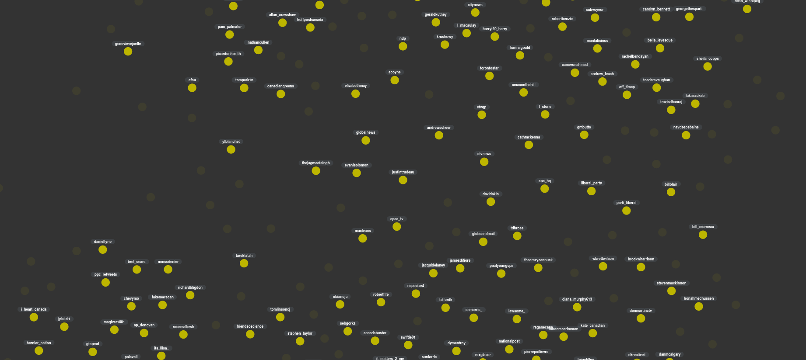

Research on authenticity, platform cultures, and the political styles of digital life.
Anthony Burton is a postdoctoral researcher and lecturer in the Media Studies department at the University of Amsterdam. Working across social theory, cultural analysis, and digital methods, he studies how platforms organize truth claims, subjectivity, and antagonism.
His writing ranges from appification, misinformation, and reactionary media to digital libertarianism, incel rationality, deplatforming, and memetic vernaculars. Recent work includes Algorithmic Authenticity, essays on cross-platform misinformation and Canada's far-right media ecology, and current projects on technofascism, app time, and the aesthetics of participation.

